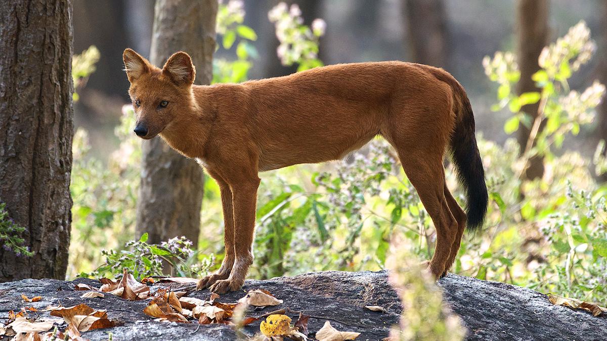
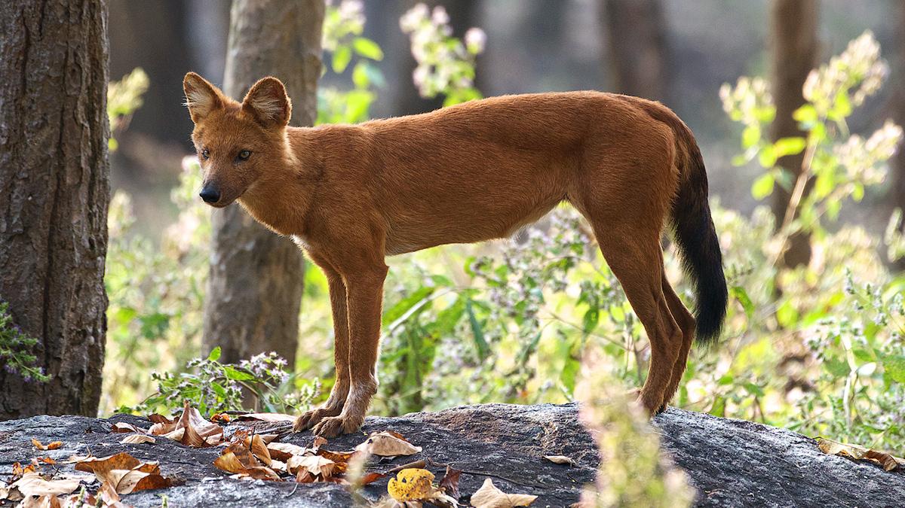
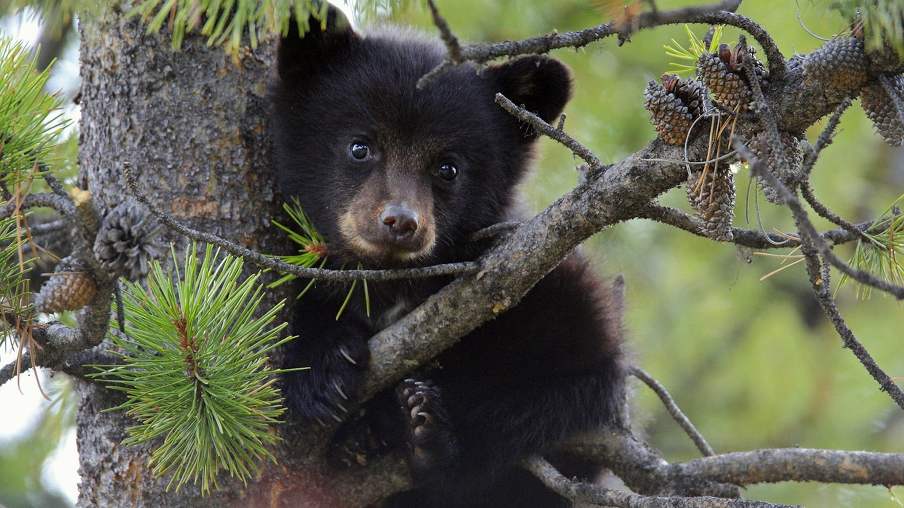
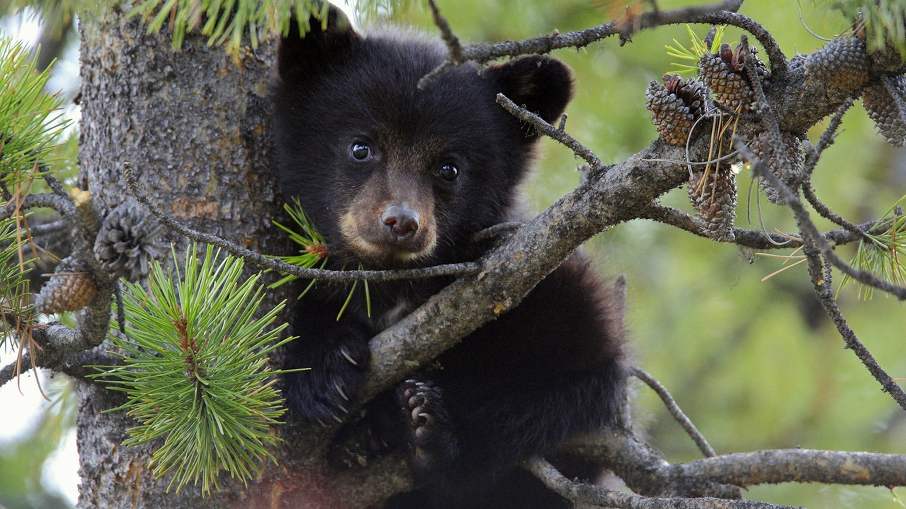

 


Koka - 202203103510267
SCROLL DOWN TO
VIEW DETAILS
VIEW DETAILS
The Koka Wildlife Sanctuary is located in Bhandara District, near Bhandara Town of Maharashtra state.The sanctuary is spread over an area of 92.34 square kilometres. This sanctuary is a part of Nawegaon nagzira Tiger Reserve.